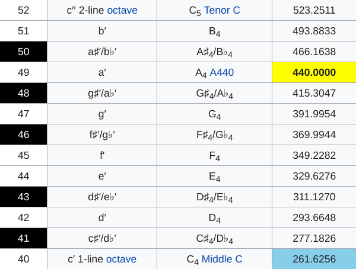

Utilização da Transformada Rápida de Fourier para detecção de notas musicais no ambiente de software livre da KDE
Lucas MonteiroSoftware Livre
4 Liberdades
Executar
Estudar e modificar o código fonte
Redistribuir
Distribuir cópias modificadas
Richard Stallman

Projeto GNU
G-nu is N-ot U-nix
Free Software Foundation

Linus Torvalds
KDE

Matthias Ettrich
Kool Desktop Environment
KDE Edu

Konqi
Lakademy

Minuet

Percepção de Acordes
Percepção de Intervalos
Percepção de Rítmo
Percepção de Escalas
Exercícios Práticos de Canto
Transformada de Fourier

Beethoven - 5th Symphony
Sambô - Sunday Bloody Sunday
FFT
(Fast Fourier Transform)
FFTW
(Fastest Fourier Transform in the West)

Sistemas de Temperamento(Afinação)
12-Tone Equal Temperament

https://github.com/lucashtm/minuet